Introduction
Set-up
The {ggplot2} package is a core package in
{tidyverse} that provides the foundation for plotting.
There are many package extensions built on {ggplot2}, but
we’ll focus on the core package for now.
Let’s go ahead and load the full {tidyverse} so we can
use other packages, too. Also, we’ll load {palmerpenguins}
for the penguins data set.
library(tidyverse)
library(palmerpenguins)Building plots
{ggplot2} is based on the notion of a grammar of
graphics, which emphasizes seven components: data, coordinate systems,
geometric objects, positions of geometric objects, mappings of
aesthetics, statistical transformations, and facets. While each of these
is needed to build a plot, several of them have implicit/default values
that we don’t need to worry about (e.g., a Cartesian coordinate system).
The minimum elements that need to be included are data, a geometric
object, and mappings of variables to axes. To do this, we use the
ggplot() function (note the package is
{ggplot2} but the function is ggplot()).
Creating a plot space
Passing data to ggplot() generates a plot space but does
not plot anything specific.
ggplot(data = penguins)
Mapping data to a plot space
Without data columns, the plot space can’t contain anything in particular. However, once you include data columns, ggplot can extract categories for factor/character variables and ranges for numeric data. This adds axes to the plot space but no data. After all, you haven’t specified how to represent the data on the plot.
ggplot(data = penguins, mapping = aes(x = species, y = body_mass_g))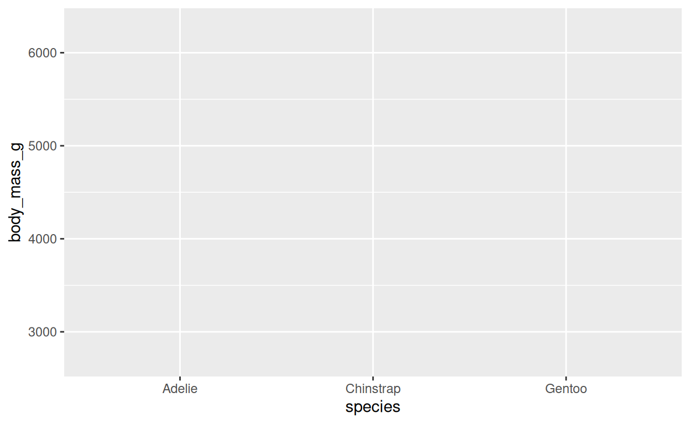
ggplot(data = penguins, mapping = aes(x = flipper_length_mm, y = body_mass_g))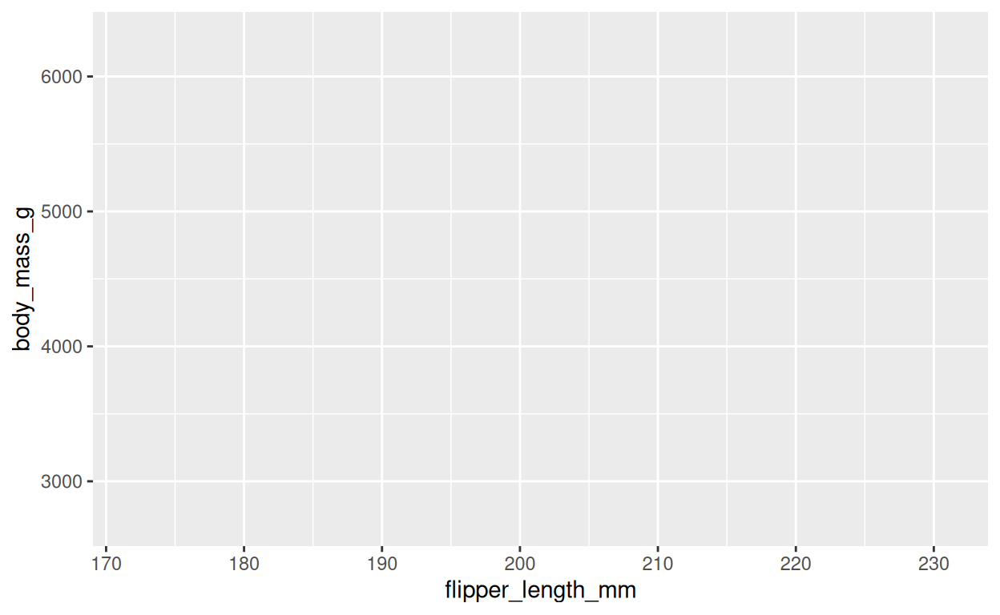
Note these blank plots can be useful if you want to have a blank plot in a presentation before showing the actual plot. They’re super easy to make in ggplot!
Plotting data
Once we have data and variable columns, we just need to add a geometric object to generate an actual plot—in this case, a scatterplot of penguin body mass vs. flipper length.
ggplot(data = penguins, mapping = aes(x = flipper_length_mm, y = body_mass_g)) +
geom_point()## Warning: Removed 2 rows containing missing values or values outside the scale range
## (`geom_point()`).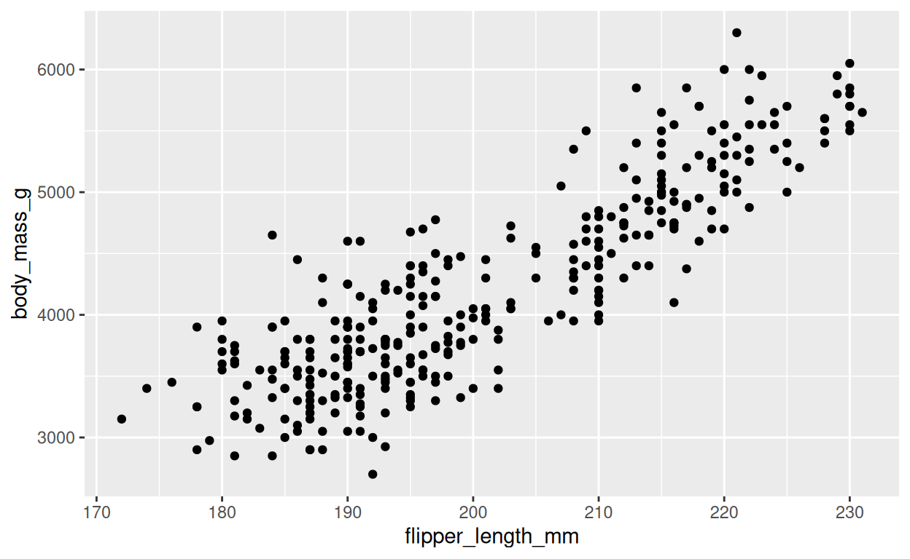
Notice the warning about two rows have NAs, so they are not plotted. We’ll turn off the warning for the remaining plots, but it is good to pay attention to these warnings.
Piping data to plots
We can pull out the data from the function and start a pipeline with
it before piping to the plot function. Remember that pipes outside of
ggplots use |>, but once you start a ggplot, use
+ to connect commands. Also, we don’t need the
mapping argument name in the ggplot and can go straight to
ggplot(aes(...)).
1. Start a plot with the data and plot the bill length on the x axis and the bill depth on the y axis.
penguins |>
...penguins |>
ggplot(mapping = aes(x = bill_length_mm, y = bill_depth_mm)) +
geom_point()To my knowledge, {learnr} cannot check if code entered
for plots is correct. So going forward, I’ll provide the correct plot,
and you need to check if your plot matches it before continuing. Does
the plot below match what you generated above? If so, continue.
Otherwise, check your code and try again until you replicate this
plot.
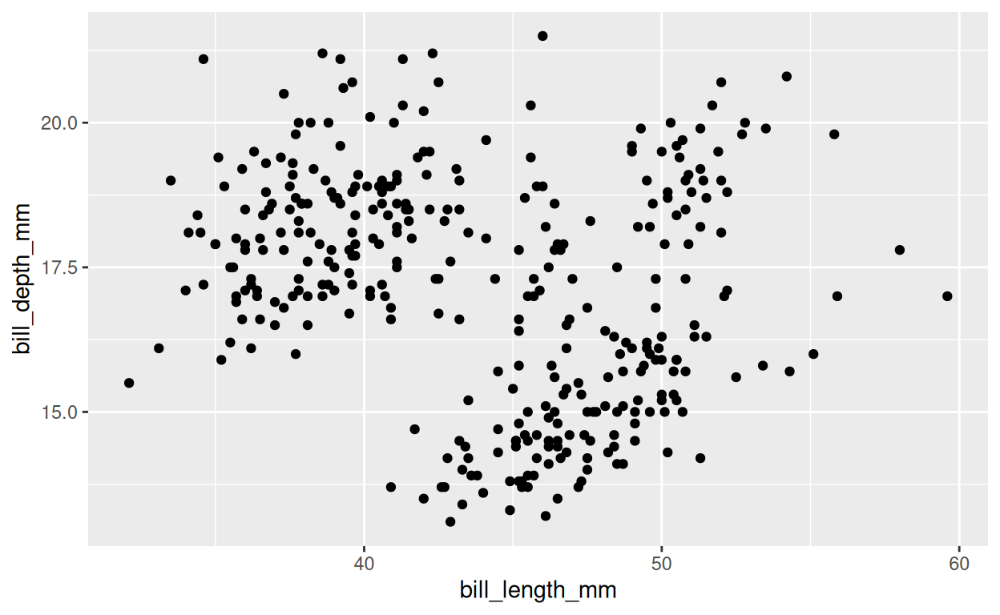
Processing data before plotting
Because ggplots are part of the tidyverse, we can pipe other tidyverse commands into them. This is particularly useful if you want to filter your data for a plot but don’t want to create a new object with the filtered data. Remember the rules of piping: once you include your data once, you shouldn’t include it again.
2. In a single pipeline, filter the penguins
data to remove observations of the chinstrap penguins, then plot the
bill length by bill depth as shown above.
penguins |>
...penguins |>
filter(species != "Chinstrap") |>
ggplot(aes(bill_length_mm, bill_depth_mm)) +
geom_point()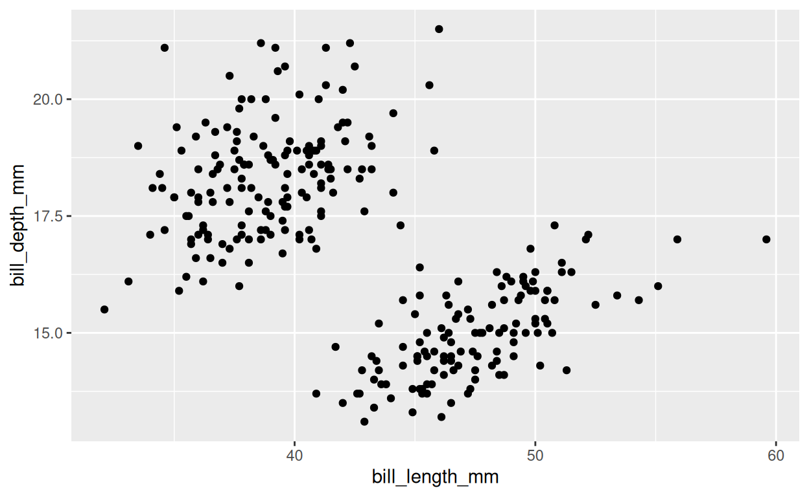
Geometric objects
There are a number of ways to plot data. That is, there are a number
of different geometric objects that you can use to represent data in a
plot. So far, we’ve plotted points with geom_point().
Here’s our scatterplot of flipper length and body mass again.
penguins |>
ggplot(aes(x = flipper_length_mm, y = body_mass_g)) +
geom_point()But what if we don’t want the actual points but rather a summary of
the data—like a linear regression line? We just need to switch out the
geom to geom_smooth().
penguins |>
ggplot(aes(x = flipper_length_mm, y = body_mass_g)) +
geom_smooth()## `geom_smooth()` using method = 'loess' and formula = 'y ~ x'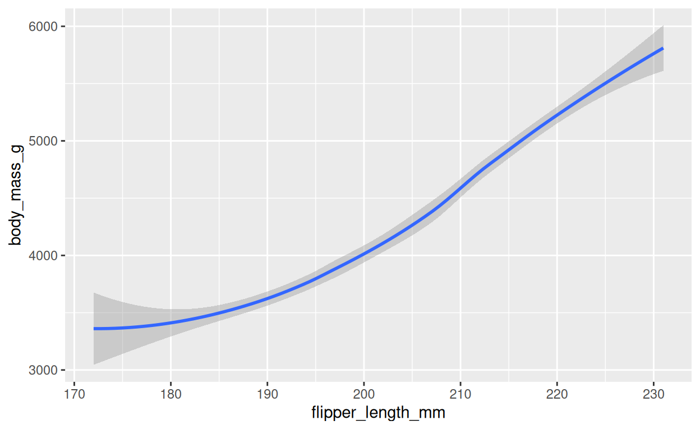
Shoot! We got a line, but this is a polynomial regression
(LOESS—locally estimated scatterplot smoothing) that smooths over the
data. To get a linear regression, we need to specify the
method argument to be "lm" for linear
model.
penguins |>
ggplot(aes(x = flipper_length_mm, y = body_mass_g)) +
geom_smooth(method = "lm")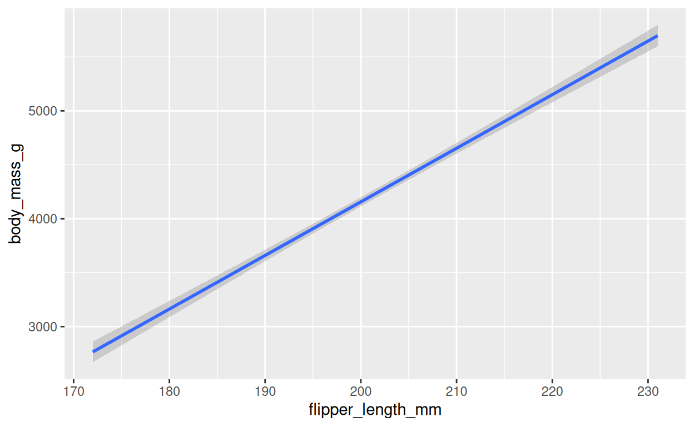
Trying our other plot:
penguins |>
ggplot(aes(x = species, y = body_mass_g)) +
geom_point()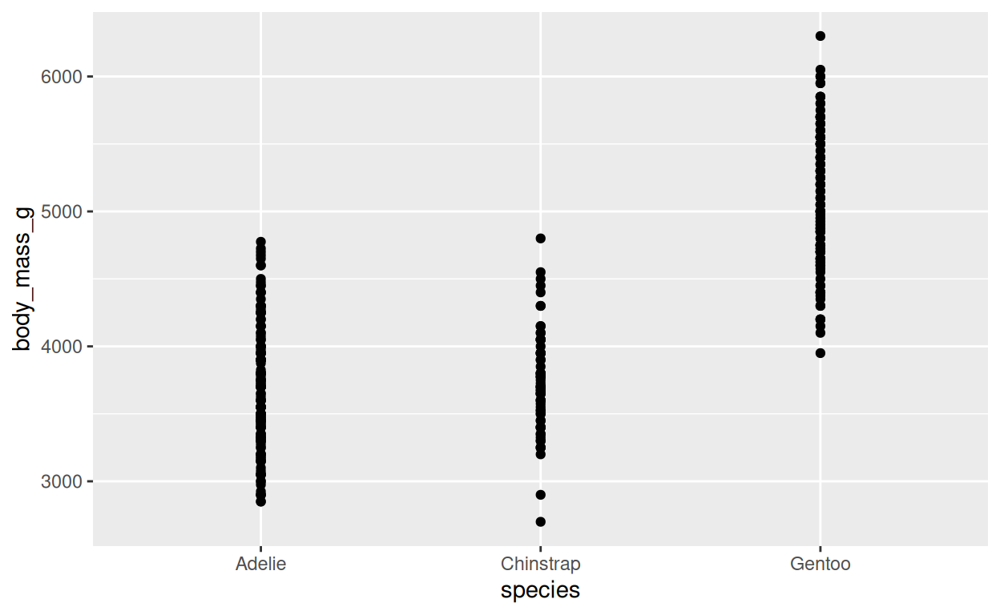
This isn’t a great plot because the data overlap a lot, and we can’t really see what’s going on too much.
An alternative would be to make a boxplot or violin plot. Here, we’ll
try a violin plot with geom_violin().
penguins |>
ggplot(aes(x = species, y = body_mass_g)) +
geom_violin()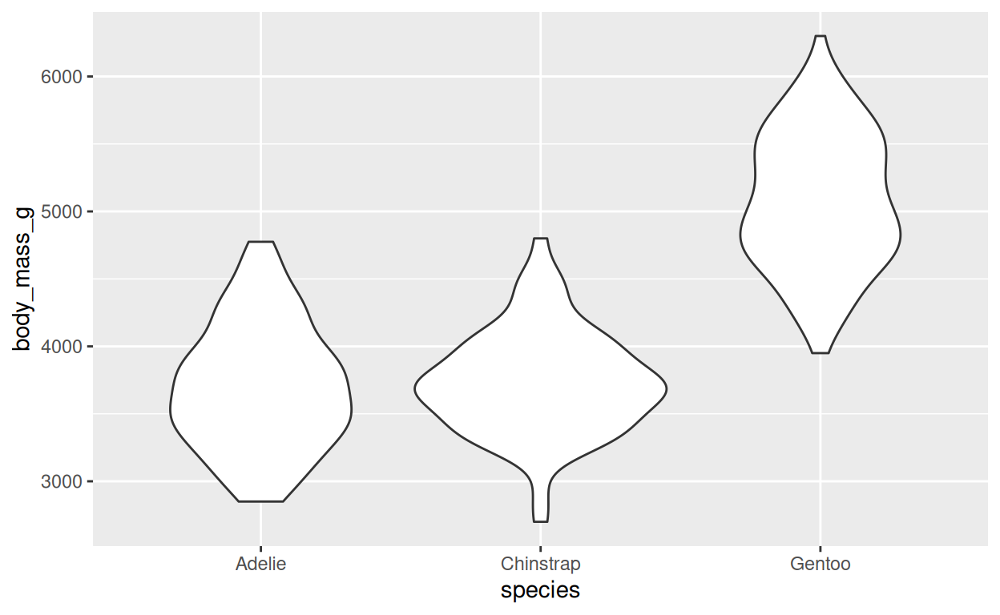
This shows the distribution of the data better.
3. Now make a boxplot instead of a violin plot.
penguins |>
ggplot(aes(x = species, y = body_mass_g)) +
...penguins |>
ggplot(aes(x = species, y = body_mass_g)) +
geom_boxplot()Does yours match this?
penguins |>
ggplot(aes(x = species, y = body_mass_g)) +
geom_boxplot()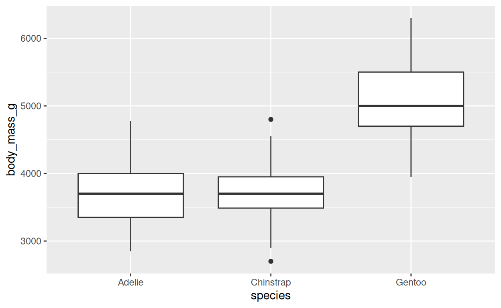
Multiple geometric objects
We can include multiple geometric objects in our plots, and the order that they are produced in the plot depends on the order that we present them in our code. Let’s plot the points for bill length and depth then overlay a regression line.
penguins |>
ggplot(aes(x = flipper_length_mm, y = body_mass_g)) +
geom_point() +
geom_smooth(method = "lm")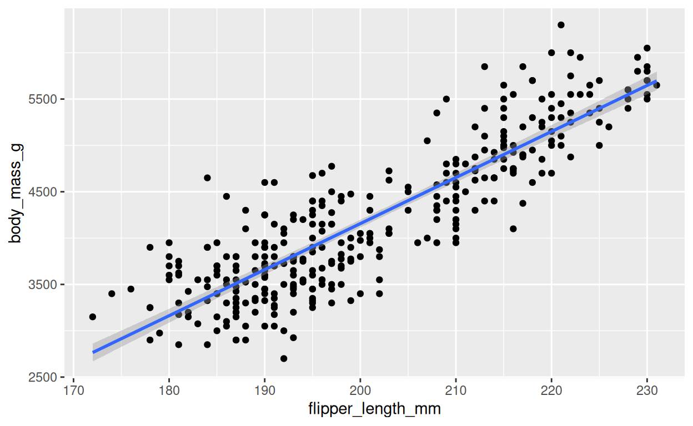
Notice that there are some data points that are visibly underneath the regression line.
4. Now reverse the order the geoms to plot the regression line first.
penguins |>
...penguins |>
ggplot(aes(x = flipper_length_mm, y = body_mass_g)) +
geom_smooth(method = "lm") +
geom_point()Do the points cover up the line now?
penguins |>
ggplot(aes(x = flipper_length_mm, y = body_mass_g)) +
geom_smooth(method = "lm") +
geom_point()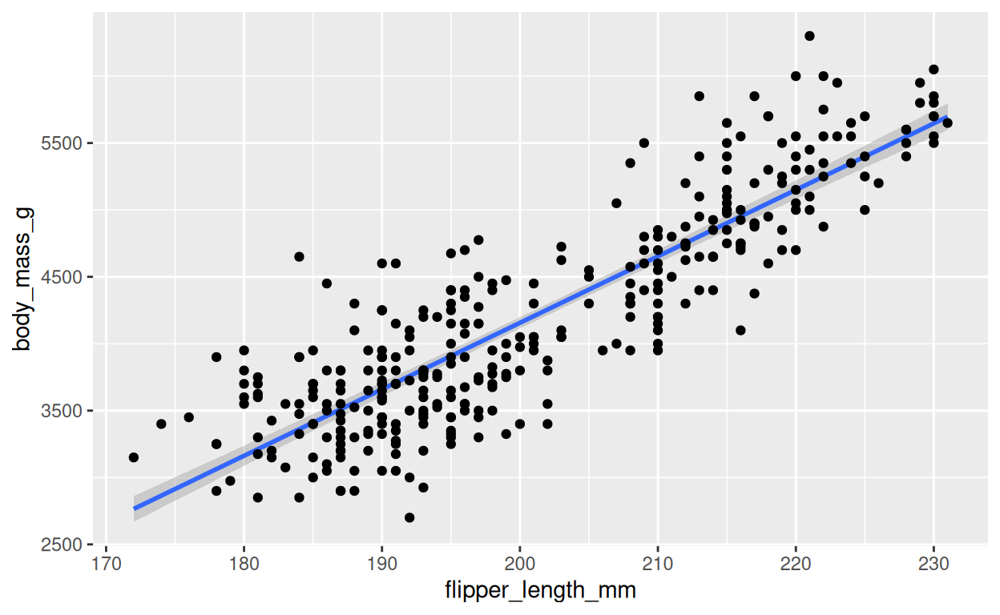
5. Now plot the penguin body mass data for each species, first with a violin plot then with the data points overlaid.
penguins |>
...penguins |>
ggplot(aes(x = species, y = body_mass_g)) +
geom_violin() +
geom_point()Does yours match?
penguins |>
ggplot(aes(x = species, y = body_mass_g)) +
geom_violin() +
geom_point()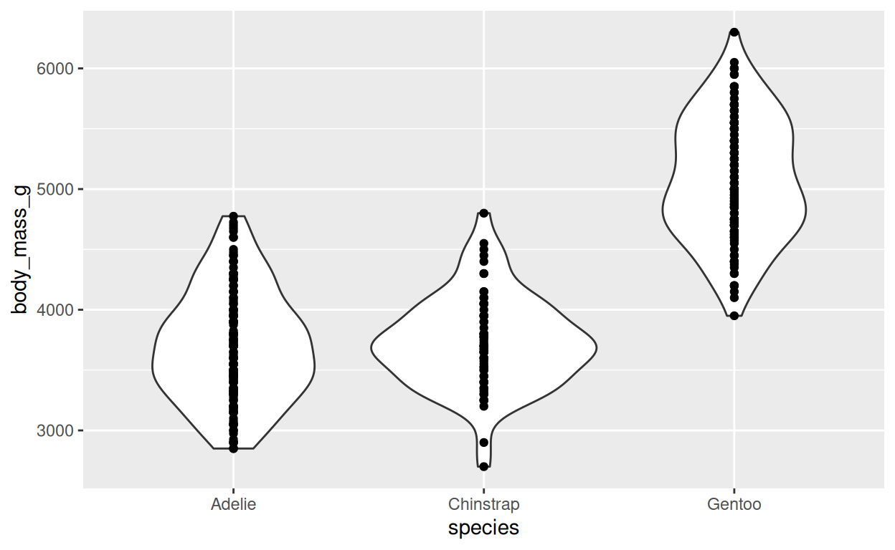
Wrap-up
Congratulations, you finished the tutorial!
To get credit for this assignment, replace my name with the first name that you submitted in the course introduction form in the code below and click Run Code to generate the text for you to submit to Canvas.
# replace my name below with your first name (surrounded by quotes)
first_name <- "Jeff"
generate_text(first_name)Assignment complete!
Great! Copy that code into Canvas, and you’re all set for this tutorial.